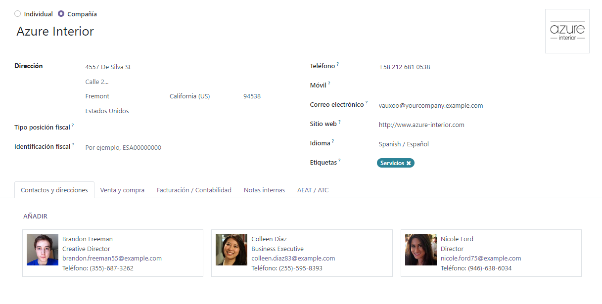

Contacts¶
The Contacts application comes installed on all Odoo databases. Contacts are created for customers the company does business with through Odoo. A contact is a repository of vital business information, facilitating communication and business transactions.
Contact form¶
To create a new contact, navigate to the , and click Create. A new form appears where various contact information can be added.
Contact type¶
Odoo allows for both Individual and Company contacts. Select either Individual or Company, depending on the type of contact that is being added.
Name¶
First, fill in the name of the Individual or Company. This is how the name appears throughout the database. This field is mandatory.
Tip
Individual contacts can have a Company contact linked to it. After selecting Individual, a new Company Name… field appears below the first name field.
Address¶
Next, enter the Address of the Company or Individual.
Tip
If the Individual option is chosen, then the type of address can be chosen from a drop-down menu. Options for this drop-down menu include: Contact, Invoice Address, Delivery Address, Other Address, and Private Address.
Additional fields¶
Additional details are included on the initial form. The following fields are available:
VAT: Value Added Tax number.
Citizen Identification: citizen or government identification number (only available on Individual).
Job Position: list the job position of the Individual (only available on Individual).
Phone: list phone number (with country code). Make a call, send an SMS, or WhatsApp message by hovering over the field on the saved form, and clicking the desired option.
Mobile: list mobile phone number (with country code). Make a call, send an SMS, or WhatsApp message by hovering over the field on the saved form, and clicking on the desired option.
Email: enter the email address with the domain.
Website: enter the full website address, starting with
httporhttps.Title: select Doctor, Madam, Miss, Mister, Professor, or create a new one directly from this field.
Tags: enter preconfigured tags by typing them in the field, or clicking the drop-down menu, and selecting one. To create a new one, type the new tag in the field, and click Create from the resulting drop-down menu.
Contacts & Addresses tab¶
At the bottom of the contact form are several tabs. On the Contacts & Addresses tab, contacts can be added that are associated with a Company and related addresses. For example, a specific contact person for the company can be listed here.
Multiple addresses can be added on both Individual and Company contacts. To do so, click Add in the Contacts & Addresses tab. Doing so reveals a Create Contact pop-up form, in which additional addresses can be configured.
On the Create Contact pop-up form, start by clicking the default Other Address field at the top to reveal a drop-down menu of address-related options.
Select any of the following options:
Contact: adds another contact to the existing contact form.
Invoice Address: adds a specific invoice address to the existing contact form.
Delivery Address: adds a specific delivery address to the existing contact form.
Other Address: adds an alternate address to the existing contact form.
Private Address: adds a private address to the existing contact form.
Once an option is selected, enter the corresponding contact information that should be used for the specified address type.
Add the Contact Name, Address, Email, along with the Phone and/or Mobile numbers below.
Set the Job Position, which appears if the Contact address type has been selected. This is similar to the Individual contact.
To add a note, click on the text field next to Notes, and write anything that is applicable to the customer or contact.
Then, click Save & Close to save the address, and close the Create Contact window. Or, click Save & New to save the address, and immediately input another one.
Sales & Purchase tab¶
Next, is the Sales & Purchases tab, which only appears when the Sales, Purchase, or Point of Sale applications are installed.
The Fiscal Position can be set on the Sales & Purchases tab. Select a Fiscal Position from the drop-down menu.
Sales section¶
Under the Sales heading, a specific Salesperson can be assigned to a contact. To do that, click the Salesperson drop-down field, and select one. Create a new Salesperson by typing the user’s name, and making the appropriate selection.
Certain Payment Terms, or a certain Pricelist, can also be set, if needed. Click the drop-down menu next to Payment Terms, and change it to one of the preselected Payment Terms, or Create a new one. Select the Pricelist drop-down menu to choose the appropriate Pricelist.
Click into the Delivery Method field to select an option from the drop-down menu.
Point Of Sale section¶
Under the Point Of Sale heading, enter a Barcode that can be used to identify the contact. Use the Loyalty Points field to track points the user won as part of a Loyalty Program.
Purchase section¶
Specify Payment Terms, 1099 Box information, and a preferred Payment Method here. A Receipt Reminder can be set here, as well.
Misc section¶
Under the Misc. heading, use Reference field to add any additional
information for this contact. If this contact should only be accessible for one company in a
multi-company database, select it from the Company field drop-down list. Use the
Website drop-down menu to restrict the publishing of this contact to one website (if
working on a database with multiple websites). Select one or more Website Tags to assist
in filtering published customers on the /customers website page. Select an Industry
for this contact from the drop-down menu. Use the SLA Policies field to assign a
Helpdesk SLA policy to this contact.
Accounting tab¶
The Accounting tab appears when the Accounting application is installed. Here, a user can add any related Bank Accounts, or set default Accounting entries.
Under the Miscellaneous heading, use the LEI field to enter a Legal Entity Identifier, if necessary.
Internal Notes tab¶
Following the Accounting tab is the Internal Notes tab, where notes can be left on this contact form, just like on the contact form noted above.
Partner Assignment tab¶
Next is the Partner Assignment tab, which by default, includes a Geolocation section, and other partner options, including Partner Activation and Partner Review configurations. These are only present when the Enterprise Resellers module is installed.
Membership tab¶
Finally, there is the Membership tab, which can help users manage any memberships that are being offered to this specific contact. It should be noted that this tab only appears when the Members applications is installed.
Archive contacts¶
If a user decides they no longer want to have this contact active, the record can be archived. To do that, go to the Action menu at the top of the contact form, and click Archive.
Then, click OK from the resulting Confirmation pop-up window.
With this contact successfully archived, as indicated by a banner at the top, they do not show up in the main contacts page, but they can still be searched for with the Archived filter.
Tip
A contact can be unarchived, if the user decides to work with them again. To do that, just click the Action menu again at the top of the archived contact form, and click Unarchive. Upon doing so, the Archived banner is removed, and the contact is restored.